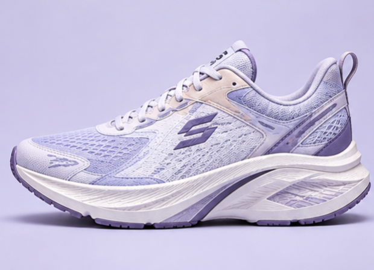
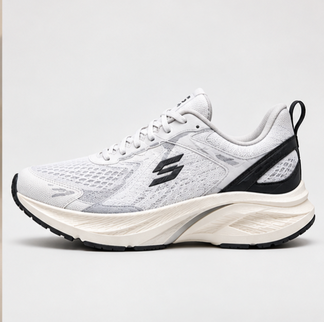
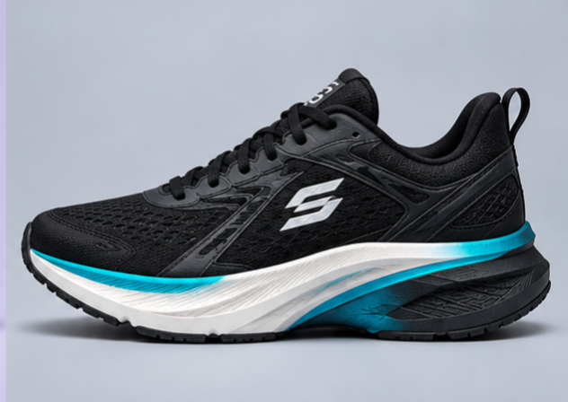
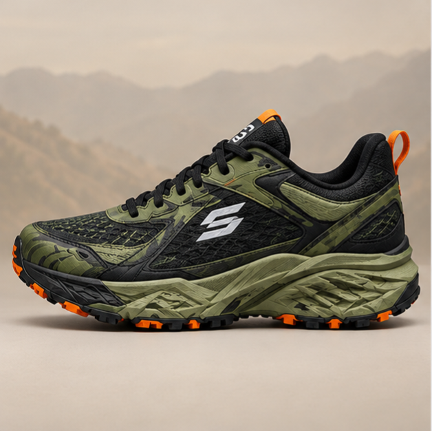

Product Highlights
- Lightweight upper material
- Breathable Mesh Design
- Cushioned Sole Support
- Available in Multiple Colors
Premium Footwear Presentation
explore our latest shoe showcase featuring clean layout, product highlights, and modern CSS styling techniques.
View CollectionThis line uses internal CSS from the <style< block.

This box is styled in the HTML file using internal css, while rest of the page is styled using the external stylesheet.
| Size | Length (cm) | Fit |
|---|---|---|
| 7 | 25.0 | Snug |
| 8 | 26.0 | Regular |
| 9 | 27.0 | Roomy |



Visit Our Official Store or Check Our New Arrivals
👟 Designed for Pinoy by Pinoy from Pinoy to Pinoy with Pinoy kay Pinoy
This is with inline CSS The others does not apply inline css just like this line.